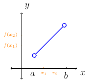
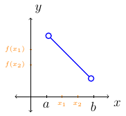
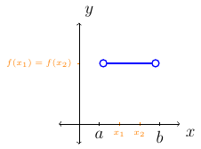
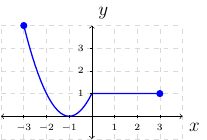

Section 2.3
Definition 4 (Relation)
A relation is a set of ordered pairs.
A relation is a correspondence from one set of numbers to another set of numbers.
Definition 5 (Independent and Dependent Variables)
Given an ordered pair, \((x,y)\):
The first component is the independent variable.
The second component is the dependent variable.
Next, is a definition of a special kind of relation that we commonly use in mathematics.
Definition 6 (Function)
A function is a relation in which, for each distinct value of the first component of the ordered pair, there is exactly one value of the second component.
Evaluate vs. Solve
Example 22
Let \(f(x)=x^2+x-6\).
Evaluate \(f(0)\).
Solution:
Solve \(f(x)=0\).
Solution:
The solution set is \(\{-3,2\}\).
Basic Function Arithmetic
Example 23
Let \(f(x)=x^2+x+1\).
Find \(f(q)\).
Solution:
Find \(f(x)+q\).
Solution:
Find \(f(x+q)\).
Solution:
Find \(f(x)+f(q)\).
Solution:
Increasing, Decreasing, and Constant
Remember, functions are a collection of ordered pairs. Graphing a function is a way to represent all of the ordered pairs.
Definition 7 (Increasing, Decreasing, and Constant.)
Suppose \(f\) is defined on an interval \((a,b\). Let \(x_1\) and \(x_2\) be elements in the interval \((a,b\) such that \(x_1<x_2\).
The function \(f\) is increasing over \((a,b)\) if and only if \(f(x_1)<f(x_2)\) for all \(x_1,x_2\). 
The function \(f\) is decreasing over \((a,b)\) if and only if \(f(x_1)>f(x_2)\) for all \(x_1,x_2\). 
The function \(f\) is constant over \((a,b)\) if and only if \(f(x_1)=f(x_2)\) for all \(x_1,x_2\). 
Example 24
Given the graph of \(y=f(x)\) determine the following using open intervals:

Where is \(f\) increasing?
Solution:
Where is \(f\) decreasing?
Solution:
Where is \(f\) constant?
Solution:
Remember when finding intervals where a function is increasing, decreasing, or constant we orientate concerning the \(x\)-axis. That is, when finding intervals of increasing for a function \(f\) we want to see all \(x\) values such that \(f\) satisfies the increasing function definition.
Domain
We will consider the following domain situations for the beginning of the semester.
Definition 8 (Domain)
The domain for the function \(f(x)=x\) is the set of all \(x\) such that \(x\) is a real number. Or, \(\text{dom}(x)=\mathbb{R}\)
The domain for the function \(f(x)=\frac{1}{x}\) is the set of all \(x\) such that \(x\) is not zero. Or, \(\text{dom}(\frac{1}{x})=\{x|x\ne0\}\)
The domain for the function \(f(x)=\sqrt{x}\) is the set of all \(x\) such that \(x\) is greater than or equal to zero. Or, \(\text{dom}(\sqrt{x})=\{x|x\ge0\}\)
Example 25
Let \(f(x)=\frac{x^2+x-12}{x+4}\). Find the domain of \(f\).
Solution:
Remember, \(\text{dom}(\frac{1}{x})=\{x|x\ne0\}\). We can use this information to find the domain of \(f\). That is, we want to say the domain of \(f\) is the set of all \(x\) such that \(x+4\ne0\). Or,
The interval notation for this set would be \((-\infty,-4)\cup(-4,\infty)\).
It is important to notice in the last example that we did not simplify the function before finding the domain. Consider what would happen if we simplified \(f\) and tried to find the domain. We would be very confused. The moral is; that when finding the domain of a function, do not simplify the function.